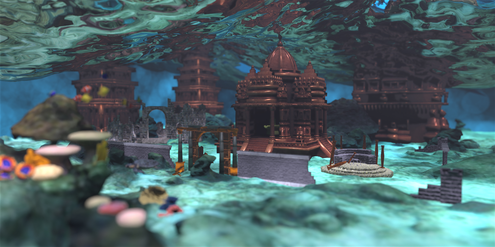

rendering_competiton/dwarka.xml file. If you want to look different stages of our implementation the outpus can be found inside folder rendering_competiton. The final git commit tag to our render is Final_render and respective commit SHA is 6ca69d13b2cc4faf62236f88876b3a0d3d74d574
References
- Physically Based Rendering - From Theory to Implementation (4th Edition) by Matt Pharr and Greg Humphreys.
- "Henrik Wann Jensen. 2001. Realistic image synthesis using photon mapping. A. K. Peters, Ltd., USA."
- Scratchpixel
- 3D SDFs by Inigo Quilez
- "Indian Temples" (https://skfb.ly/6WvPu) by yanix is licensed under Creative Commons Attribution (http://creativecommons.org/licenses/by/4.0/)
- "3D Ruins" by Ron Kapaun / 3TD Studios
- "Reef bottom" (https://skfb.ly/6sBKC) by CaptainObvious is licensed under Creative Commons Attribution (http://creativecommons.org/licenses/by/4.0/)
- "Model 47A - Loggerhead Sea Turtle" (https://skfb.ly/6QStY) by DigitalLife3D is licensed under Creative Commons Attribution-NonCommercial (http://creativecommons.org/licenses/by-nc/4.0/).
- "School Of Fish" (https://skfb.ly/6WpRz) by Titanas YT is licensed under Creative Commons Attribution (http://creativecommons.org/licenses/by/4.0/).
- "Soft Coral Set" (https://skfb.ly/oWStC) by Kanna-Nakajima is licensed under Creative Commons Attribution (http://creativecommons.org/licenses/by/4.0/)..